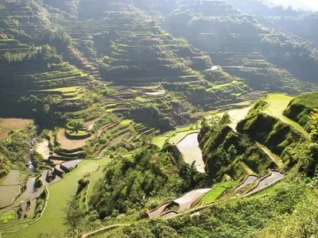

LuzonBanaue Rice Terraces
Carved into the mountains by hand over generations, the terraces show how a community shaped a landscape and still farms it today.
Read the historyLuzon, Palawan (MIMAROPA)
A river that flows through a limestone cave and enters the sea, protected within a national park of rainforest and mountains.
In Palawan, a river runs underground through a limestone mountain and flows straight into the sea. Visitors enter by paddle boat and drift through chambers hung with stalactites and filled with bats and swiftlets.
The park above the cave protects a large area of forest, from the coast to the mountain, and is home to many species that live only in Palawan.
The cave is cut into karst, a landscape of limestone shaped by water. Over a very long time, rainwater seeped into cracks in the rock and slowly dissolved passages, which grew into a cave system that a river now follows to the sea.
Because the river meets the sea inside the cave, the lower part of the cave is affected by the tides, an unusual feature that makes the system scientifically important.
Local people have known the cave for generations. In 1971 the area was declared a national park to protect the forest and the cave. In 1999 UNESCO placed it on the World Heritage list for its natural features, and the protected area was later expanded to include more forest around it.
Water dissolves passages in the limestone mountain, creating the cave system.
The area around the cave is declared a national park.
UNESCO lists the park for its outstanding natural features.
The river is announced as one of the New7Wonders of Nature after a global vote.
More forest is added to the protected area.
The river is one of Palawan's most visited places. Limits on daily visitors and community involvement in guiding help protect the cave and its wildlife.

LuzonCarved into the mountains by hand over generations, the terraces show how a community shaped a landscape and still farms it today.
Read the historyBaybayin was used across the islands before Spanish rule. Read how the script worked and how designers and students are reviving it.
Read the historyFor over two centuries, ships carried silk, silver and spices between Manila and Mexico. This short film traces one voyage.
Read the history